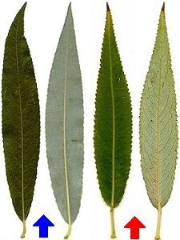
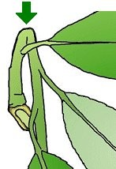

|
| Ähnliche Bäume:
Die Silberweide hat ähnliche Blätter wie die Bruchweide.
 |  Die Zweige der Silberweide brechen nicht leicht durch.
Ihre Blätter sind bläulicher als die Blätter der Bruchweide.
Die jungen Blätter sind auf der Unterseite dicht behaart.
|